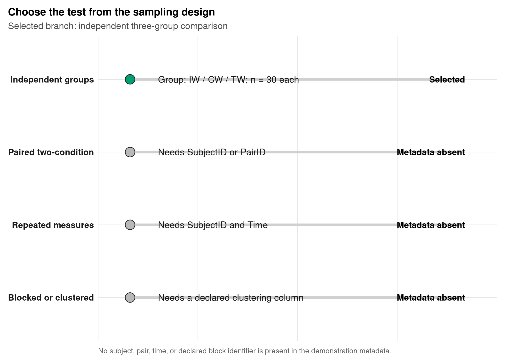
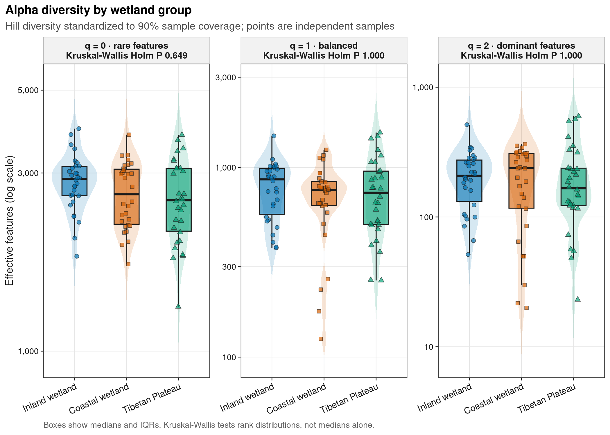
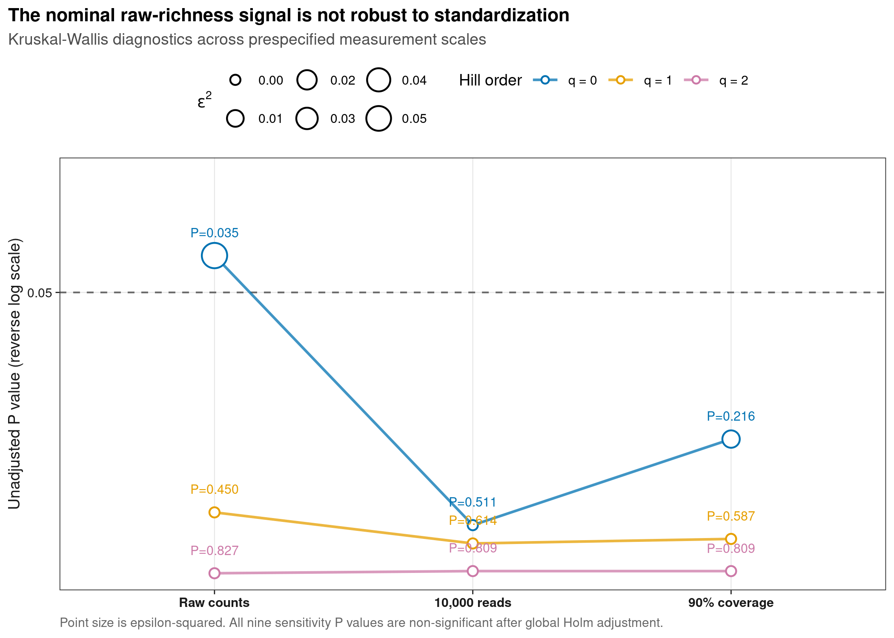
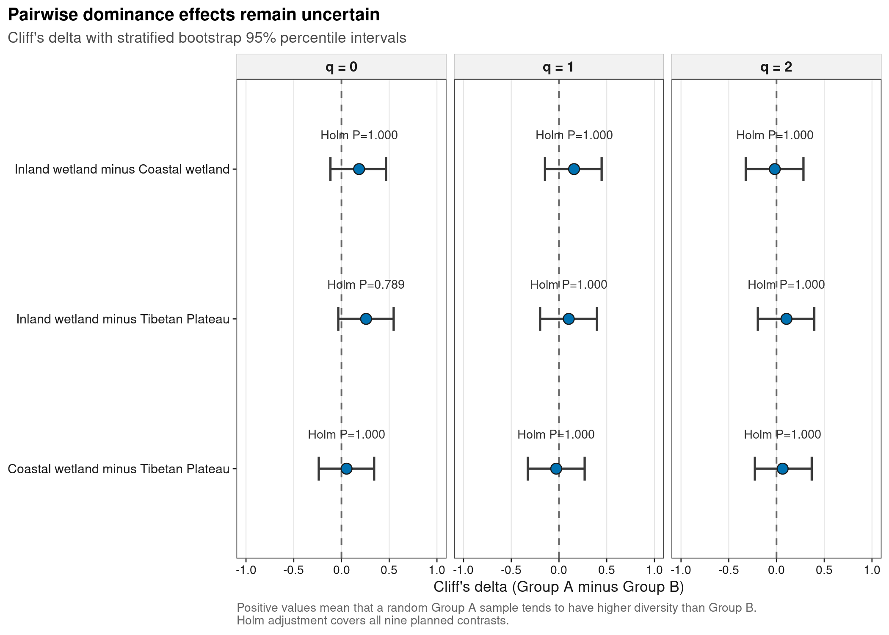

options(timeout = 600)
data_url <- "https://raw.githubusercontent.com/petemeng/microbiome-best-practices/3cb6a817e0c73ab7ecbec1cedc1ad80cbb9ecfaa/"
input_files <- c(
"data/small/metadata.tsv",
"data/small/otutab.tsv",
"data/small/taxonomy.tsv"
)
for (path in input_files) {
dir.create(dirname(path), recursive = TRUE, showWarnings = FALSE)
if (!file.exists(path)) download.file(paste0(data_url, path), path, mode = "wb", quiet = TRUE)
}Alpha 组间检验 + 复现顶刊箱线图
组间显著不等于生态差异重要
微生物组论文最常见的 Alpha 结果图，是按病例组、处理组或地点分组的箱线图。它通常被用来回答：
各组样本内的群落多样性是否不同？差异方向和不确定性有多大？
一张可投稿的图至少应同时保留：
- 每个独立样本，而不是只画均值或箱体；
- Alpha 指标的明确定义和标准化口径；
- 总体检验及其多重比较范围；
- 成对效应方向、效应量和置信区间；
- 与研究设计一致的独立、配对或重复测量模型。
本例使用 microeco 2.0.0 分发的中国湿地真实 16S 数据。原始研究覆盖内陆、沿海与青藏高原湿地，并讨论了环境梯度与细菌群落的关系。数据论文（An et al., 2019）提供研究背景。这里从标准三件套重新计算 90% sample coverage 下的 Hill (q=0,1,2)，重绘“原始点 + violin + boxplot”主图，并用效应量 forest plot 承载成对推断。
重要先给结论
三个 coverage-standardized Hill 指标的 Kruskal–Wallis 检验均未通过 Holm 校正；九个计划成对比较也没有一个通过 Holm 校正。未经标准化的 raw (q=0) 有一个未校正的名义信号（P = 0.035），但在 10,000 reads 和 90% coverage 下分别变为 P = 0.511 与 P = 0.216。这个例子说明，星号可能首先反映测量口径，而不是稳健的组间生物学差异。
下载并读取本次分析的数据
需要 R，以及 digest、dplyr、emmeans、ggplot2、iNEXT、jsonlite、lmerTest、ragg、readr、scales、svglite、tidyr、vegan。本次使用中国湿地的 OTU count 表、分类表和样本信息表。
在一个新建的文件夹中运行以下代码，下载文件后按文中的顺序继续分析：
library(digest)
library(dplyr)
library(ggplot2)
library(iNEXT)
library(readr)
library(scales)
library(vegan)
set.seed(20260721)
font_pub <- "sans"
pal_pub <- c(
blue = "#0072B2",
orange = "#E69F00",
green = "#009E73",
vermillion = "#D55E00",
purple = "#CC79A7",
sky = "#56B4E9",
yellow = "#F0E442",
grey = "#6B7280"
)
scale_color_pub <- function(..., values = unname(pal_pub)) {
ggplot2::scale_color_manual(..., values = values)
}
scale_fill_pub <- function(..., values = unname(pal_pub)) {
ggplot2::scale_fill_manual(..., values = values)
}
theme_pub <- function(base_size = 10, base_family = font_pub) {
ggplot2::theme_bw(base_size = base_size, base_family = base_family) +
ggplot2::theme(
panel.grid.minor = ggplot2::element_blank(),
panel.grid.major = ggplot2::element_line(
colour = "#E6E6E6",
linewidth = 0.25
),
axis.text = ggplot2::element_text(colour = "#1A1A1A"),
axis.title = ggplot2::element_text(colour = "#1A1A1A"),
axis.ticks = ggplot2::element_line(
colour = "#1A1A1A",
linewidth = 0.3
),
plot.title.position = "plot",
plot.title = ggplot2::element_text(
face = "bold",
size = ggplot2::rel(1.15)
),
plot.subtitle = ggplot2::element_text(colour = "#4D4D4D"),
plot.caption = ggplot2::element_text(
colour = "#666666",
hjust = 0
),
strip.background = ggplot2::element_rect(
fill = "#F2F2F2",
colour = "#B3B3B3",
linewidth = 0.3
),
strip.text = ggplot2::element_text(face = "bold"),
legend.key = ggplot2::element_blank(),
legend.position = "top"
)
}
save_pub <- function(
plot,
file_base,
width = 89,
height = 70,
units = "mm",
dpi = 600,
write_svg = TRUE,
write_tiff = TRUE,
base_family = font_pub
) {
dir.create(dirname(file_base), recursive = TRUE, showWarnings = FALSE)
ggplot2::ggsave(
paste0(file_base, ".pdf"),
plot,
width = width,
height = height,
units = units,
device = grDevices::cairo_pdf,
family = base_family,
bg = "white"
)
if (isTRUE(write_svg)) {
ggplot2::ggsave(
paste0(file_base, ".svg"),
plot,
width = width,
height = height,
units = units,
device = svglite::svglite,
bg = "white"
)
}
ggplot2::ggsave(
paste0(file_base, ".png"),
plot,
width = width,
height = height,
units = units,
dpi = dpi,
device = ragg::agg_png,
bg = "white"
)
if (isTRUE(write_tiff)) {
ggplot2::ggsave(
paste0(file_base, ".tiff"),
plot,
width = width,
height = height,
units = units,
dpi = dpi,
device = ragg::agg_tiff,
compression = "lzw",
bg = "white"
)
}
invisible(plot)
}读取三件套并按 ID 对齐
otutab 必须是 feature × sample 的非负整数表。Alpha richness 对 singleton 很敏感，因此这里不在计算前做 prevalence 或 abundance 过滤。
read_keyed_tsv <- function(path) {
x <- readr::read_tsv(
path,
show_col_types = FALSE,
progress = FALSE,
name_repair = "minimal",
na = character()
)
ids <- as.character(x[[1L]])
stopifnot(!anyDuplicated(ids))
out <- as.data.frame(x[-1L], check.names = FALSE)
rownames(out) <- ids
out
}
input_paths <- c(
otutab = "data/small/otutab.tsv",
taxonomy = "data/small/taxonomy.tsv",
metadata = "data/small/metadata.tsv"
)
expected_sha256 <- c(
otutab = "76fa79c38da889f35978dc86da4641a270961746709ff38049ee5f67e3c6f7a3",
taxonomy = "725280bb9a0cd9bda7b540022e92af945ceed52527f8b2d220b055b4489f6901",
metadata = "df24771dccf27607ddf922c6bca2cafa876d946fbe2e09d14b601accce66ba64"
)
observed_sha256 <- vapply(
input_paths,
digest::digest,
character(1),
algo = "sha256",
serialize = FALSE,
file = TRUE
)
stopifnot(identical(observed_sha256, expected_sha256))
otutab <- read_keyed_tsv(input_paths[["otutab"]])
taxonomy <- read_keyed_tsv(input_paths[["taxonomy"]])
metadata <- read_keyed_tsv(input_paths[["metadata"]])
otutab <- data.matrix(otutab)
storage.mode(otutab) <- "numeric"
feature_ids <- rownames(otutab)
sample_ids <- colnames(otutab)
stopifnot(
setequal(feature_ids, rownames(taxonomy)),
setequal(sample_ids, rownames(metadata)),
all(is.finite(otutab)),
all(otutab >= 0),
all(abs(otutab - round(otutab)) < .Machine$double.eps^0.5),
all(colSums(otutab) > 0)
)
taxonomy <- taxonomy[feature_ids, , drop = FALSE]
metadata <- metadata[sample_ids, , drop = FALSE]
dim(otutab)
sum(otutab)
otutab[1:5, 1:5]
taxonomy[1:5, , drop = FALSE]
head(metadata)[1] 13628 90
[1] 1619670
S1 S2 S3 S4 S5
OTU_4272 1 0 1 1 0
OTU_236 1 4 0 2 35
OTU_399 9 2 2 4 4
OTU_1556 5 18 7 3 2
OTU_32 83 9 19 8 102
Kingdom Phylum
OTU_4272 k__Bacteria p__Firmicutes
OTU_236 k__Bacteria p__Chloroflexi
OTU_399 k__Bacteria p__Proteobacteria
OTU_1556 k__Bacteria p__Acidobacteria
OTU_32 k__Archaea p__Miscellaneous Crenarchaeotic Group
Class Order Family Genus
OTU_4272 c__Bacilli o__Bacillales f__ g__
OTU_236 c__ o__ f__ g__
OTU_399 c__Betaproteobacteria o__Nitrosomonadales f__Nitrosomonadaceae g__
OTU_1556 c__Acidobacteria o__Subgroup 17 f__ g__
OTU_32 c__ o__ f__ g__
Species
OTU_4272 s__
OTU_236 s__
OTU_399 s__
OTU_1556 s__
OTU_32 s__
Group Type Saline
S1 IW NE Non-saline soil
S2 IW NE Non-saline soil
S3 IW NE Non-saline soil
S4 IW NE Non-saline soil
S5 IW NE Non-saline soil
S6 IW NE Non-saline soil下载完整 R 脚本。脚本包含数据下载、计算和图形导出。
首次使用时安装 R 包
install.packages(c(
"digest", "dplyr", "emmeans", "ggplot2", "iNEXT", "jsonlite",
"lme4", "lmerTest", "ragg", "readr", "scales", "svglite",
"systemfonts", "vegan"
))检验之前先锁定设计、指标和检验族
最短的决策顺序是：
- 确认实验单位是否独立。 同一受试者、地点、窝、家庭或时间序列中的观测不能当作独立样本。
- 预先确定主要 Alpha 指标。 本例使用相同量纲的 Hill (q=0,1,2)，主口径固定为 90% sample coverage。
- 定义一个检验族。 三个总体检验一起做 Holm 校正；三个指标 × 三个 pair 的九个计划比较构成另一个完整检验族。
- 同时报告效应量与区间。 P 值不说明差异有多大；Cliff’s delta 表示两组随机抽样时谁更可能取得较高值。
独立、配对和重复测量不是三个按钮
| 数据结构 | metadata 最低要求 | 典型分析 |
|---|---|---|
| 独立两组 | Group，每个实验单位只出现一次 |
Wilcoxon–Mann–Whitney 或 Welch t test |
| 独立三组及以上 | Group，每个实验单位只出现一次 |
Kruskal–Wallis 或 Welch one-way test |
| 配对两条件 | SubjectID/PairID + Condition |
paired Wilcoxon 或 paired t test |
| 重复测量 | SubjectID + Time + Condition |
mixed-effects model 或适当的纵向模型 |
| 区组/聚类 | Block、SiteID、Family、Cage、Center 等 |
在模型或重采样中保留聚类结构 |
当前 metadata 只有 Group、Type 和 Saline，没有 subject、pair、time 或声明的 block 标识，因此可执行的演示分支是三组独立样本分析。列不存在并不能证明生物学独立；真实项目仍要回查采样表和实验记录。
深入：Kruskal–Wallis 检验的不是“中位数”三个字
Kruskal–Wallis 先对所有观测联合排序，再比较各组秩和。其原假设涉及组间分布，而不是无条件地只比较中位数。只有各组分布形状和尺度近似、差异可理解为位置平移时，才可把结果简化解释为位置或中位数差异。
因此本例同时做三件事：
- 画出全部样本、violin 轮廓和 boxplot；
- 保存各组 skewness、IQR 与 Tukey outlier 诊断；
- 用 Cliff’s delta 描述随机抽取一个 A 组样本和一个 B 组样本时的序优势。
Cliff’s delta 定义为：
[ =P(X_A>X_B)-P(X_A<X_B), . ]
当 (>0) 时，A 组样本倾向于高于 B 组；() 表示没有总体序优势。ProbabilitySuperiority = (delta + 1) / 2 将相同信息转换为更直观的概率尺度，并把 ties 各分一半。
深入：为什么不先跑 Shapiro–Wilk 再挑检验
用同一批数据先检验正态性，再根据 P 值决定 t test 或秩检验，会把一个数据驱动的模型选择步骤隐藏进最终 P 值。样本量小时，正态性检验可能没有能力发现偏离；样本量大时，又可能对不重要的轻微偏离非常敏感。
更透明的做法是：
- 根据 estimand 和设计预先指定主分析；
- 用分布图和残差诊断解释模型是否合适；
- 用有清楚 estimand 的替代模型做 sensitivity analysis；
- 不根据哪一个方法更显著来选择最终结果。
本例预先把秩分布比较设为主分析，并把不等方差 Welch mean comparison 设为敏感性分析。两条路线都没有显著结果。
警告示例数据的 Group 与 Saline 完全混杂
IW 全部是 non-saline soil，而 CW 与 TW 全部是 saline soil。因此，即使发现 Group 差异，也不能把它单独归因于地理类别或盐碱状态。本章演示的是组间统计与作图合同，不提供地理或盐碱因果结论。
按实验设计选择Alpha多样性检验
先让 metadata 决定分析分支
下面的审计不会把缺失列自动解释成“独立”；它只说明当前表能支持哪条计算路线。独立性仍需由采样设计确认。
subject_candidates <- c("SubjectID", "Subject", "ParticipantID")
pair_candidates <- c("PairID", "Pair", "MatchedSet")
time_candidates <- c("Time", "Timepoint", "Visit")
block_candidates <- c("Block", "Batch", "SiteID", "Center")
present_subject <- intersect(subject_candidates, colnames(metadata))
present_pair <- intersect(pair_candidates, colnames(metadata))
present_time <- intersect(time_candidates, colnames(metadata))
present_block <- intersect(block_candidates, colnames(metadata))
design_audit <- data.frame(
Branch = c(
"Independent groups",
"Paired two-condition",
"Repeated measures",
"Blocked or clustered"
),
RequiredMetadata = c(
"Group with independent experimental units",
"SubjectID or PairID plus two conditions",
"SubjectID plus Time and Condition",
"Block, SiteID, Center, Family, Cage, or Batch"
),
Available = c(
"Group" %in% colnames(metadata),
length(c(present_subject, present_pair)) > 0,
length(present_subject) > 0 && length(present_time) > 0,
length(present_block) > 0
)
)
selected_branch <- "Independent three-group"
stopifnot(
all(c("Group", "Type", "Saline") %in% colnames(metadata)),
length(present_subject) == 0L,
length(present_pair) == 0L,
length(present_time) == 0L,
identical(sort(unique(metadata$Group)), c("CW", "IW", "TW")),
identical(as.integer(table(metadata$Group)[c("CW", "IW", "TW")]),
c(30L, 30L, 30L))
)
design_audit
selected_branch
with(metadata, table(Group, Saline)) Branch RequiredMetadata Available
1 Independent groups Group with independent experimental units TRUE
2 Paired two-condition SubjectID or PairID plus two conditions FALSE
3 Repeated measures SubjectID plus Time and Condition FALSE
4 Blocked or clustered Block, SiteID, Center, Family, Cage, or Batch FALSE
[1] "Independent three-group"
Saline
Group Non-saline soil Saline soil
CW 0 30
IW 30 0
TW 0 30Group × Saline 表显示完全混杂。后面的 P 值描述三个标签下的样本分布，不识别单独的地理或盐碱效应。
从计数表独立计算三种测量口径
主分析使用 90% sample coverage；raw 与 10,000 reads 只用于 sensitivity analysis。三种结果都在本页从计数表计算，不把外部 Alpha 结果表作为隐性输入。
community <- t(otutab)
library_size <- rowSums(community)
observed <- vegan::specnumber(community)
shannon <- vegan::diversity(community, index = "shannon")
inverse_simpson <- vegan::diversity(
community,
index = "invsimpson"
)
group_labels <- c(
IW = "Inland wetland",
CW = "Coastal wetland",
TW = "Tibetan Plateau"
)
group_levels <- unname(group_labels[c("IW", "CW", "TW")])
group_palette <- c(
"Inland wetland" = pal_pub[["blue"]],
"Coastal wetland" = pal_pub[["vermillion"]],
"Tibetan Plateau" = pal_pub[["green"]]
)
group_shapes <- c(
"Inland wetland" = 21,
"Coastal wetland" = 22,
"Tibetan Plateau" = 24
)
alpha_raw <- rbind(
data.frame(
SampleID = sample_ids,
Order = 0L,
HillD = as.numeric(observed)
),
data.frame(
SampleID = sample_ids,
Order = 1L,
HillD = as.numeric(exp(shannon))
),
data.frame(
SampleID = sample_ids,
Order = 2L,
HillD = as.numeric(inverse_simpson)
)
)
alpha_raw$Group <- metadata[alpha_raw$SampleID, "Group"]
alpha_raw$GroupLabel <- factor(
unname(group_labels[alpha_raw$Group]),
levels = group_levels
)
alpha_raw$Standardization <- "Raw counts"
abundance_list <- setNames(
lapply(seq_len(nrow(community)), function(i) {
as.numeric(community[i, community[i, ] > 0])
}),
sample_ids
)
size_target <- 10000L
set.seed(20260721)
size_estimate <- iNEXT::estimateD(
abundance_list,
q = c(0, 1, 2),
datatype = "abundance",
base = "size",
level = size_target,
nboot = 0
)
alpha_size <- data.frame(
SampleID = size_estimate$Assemblage,
Group = metadata[size_estimate$Assemblage, "Group"],
GroupLabel = unname(
group_labels[metadata[size_estimate$Assemblage, "Group"]]
),
ImpliedReads = size_estimate$m,
Method = size_estimate$Method,
Order = as.integer(size_estimate$Order.q),
SampleCoverage = size_estimate$SC,
HillD = size_estimate$qD,
Standardization = "10,000 reads",
stringsAsFactors = FALSE
)
alpha_size$GroupLabel <- factor(
alpha_size$GroupLabel,
levels = group_levels
)
coverage_target <- 0.90
set.seed(20260721)
coverage_estimate <- iNEXT::estimateD(
abundance_list,
q = c(0, 1, 2),
datatype = "abundance",
base = "coverage",
level = coverage_target,
nboot = 0
)
alpha_coverage <- data.frame(
SampleID = coverage_estimate$Assemblage,
Group = metadata[coverage_estimate$Assemblage, "Group"],
GroupLabel = unname(
group_labels[metadata[coverage_estimate$Assemblage, "Group"]]
),
ObservedReads = as.numeric(
library_size[coverage_estimate$Assemblage]
),
ImpliedReads = coverage_estimate$m,
EffortRatio = coverage_estimate$m / as.numeric(
library_size[coverage_estimate$Assemblage]
),
Method = coverage_estimate$Method,
Order = as.integer(coverage_estimate$Order.q),
TargetCoverage = coverage_estimate$SC,
HillD = coverage_estimate$qD,
Standardization = "90% coverage",
stringsAsFactors = FALSE
)
alpha_coverage$GroupLabel <- factor(
alpha_coverage$GroupLabel,
levels = group_levels
)
coverage_q0 <- alpha_coverage[
alpha_coverage$Order == 0L,
,
drop = FALSE
]
stopifnot(
nrow(alpha_raw) == 270L,
nrow(alpha_size) == 270L,
nrow(alpha_coverage) == 270L,
length(unique(alpha_coverage$SampleID)) == 90L,
identical(sort(unique(alpha_coverage$Order)), 0:2),
sum(coverage_q0$Method == "Rarefaction") == 56L,
sum(coverage_q0$Method == "Extrapolation") == 34L,
max(coverage_q0$EffortRatio) <= 1.5
)
c(
samples = length(unique(alpha_coverage$SampleID)),
rarefaction_samples = sum(coverage_q0$Method == "Rarefaction"),
extrapolation_samples = sum(coverage_q0$Method == "Extrapolation"),
maximum_effort_ratio = max(coverage_q0$EffortRatio)
) samples rarefaction_samples extrapolation_samples
90.000000 56.000000 34.000000
maximum_effort_ratio
1.452755 先描述分布，但不让诊断替我们选择 P 值
sample_skewness <- function(x) {
n <- length(x)
s <- sd(x)
if (n < 3L || !is.finite(s) || s == 0) {
return(NA_real_)
}
n / ((n - 1) * (n - 2)) * sum(((x - mean(x)) / s)^3)
}
group_descriptive_summary <- alpha_coverage |>
group_by(Order, Group, GroupLabel) |>
summarise(
Samples = n(),
Mean = mean(HillD),
SD = sd(HillD),
Median = median(HillD),
Q25 = quantile(HillD, 0.25),
Q75 = quantile(HillD, 0.75),
Minimum = min(HillD),
Maximum = max(HillD),
.groups = "drop"
)
distribution_diagnostics <- alpha_coverage |>
group_by(Order, Group, GroupLabel) |>
summarise(
Samples = n(),
UniqueValues = n_distinct(HillD),
Skewness = sample_skewness(HillD),
IQR = IQR(HillD),
LowerOutliers = sum(
HillD < quantile(HillD, 0.25) - 1.5 * IQR(HillD)
),
UpperOutliers = sum(
HillD > quantile(HillD, 0.75) + 1.5 * IQR(HillD)
),
.groups = "drop"
)
group_descriptive_summary
distribution_diagnostics# A tibble: 9 × 11
Order Group GroupLabel Samples Mean SD Median Q25 Q75 Minimum Maximum
<int> <chr> <fct> <int> <dbl> <dbl> <dbl> <dbl> <dbl> <dbl> <dbl>
1 0 CW Coastal we… 30 2661. 531. 2634. 2188. 3072. 1711. 3799.
2 0 IW Inland wet… 30 2858. 488. 2893. 2608. 3123. 1796. 3944.
3 0 TW Tibetan Pl… 30 2585. 636. 2536. 2096. 3088. 1315. 3795.
4 1 CW Coastal we… 30 715. 278. 761. 629. 844. 125. 1243.
5 1 IW Inland wet… 30 797. 261. 866. 568. 992. 377. 1471.
6 1 TW Tibetan Pl… 30 771. 353. 738. 500. 958. 254. 1532.
7 2 CW Coastal we… 30 206. 112. 237. 117. 308. 19.9 364.
8 2 IW Inland wet… 30 213. 101. 208. 133. 274. 51.3 514.
9 2 TW Tibetan Pl… 30 213. 152. 166. 122. 238. 23.0 597.
# A tibble: 9 × 9
Order Group GroupLabel Samples UniqueValues Skewness IQR LowerOutliers
<int> <chr> <fct> <int> <int> <dbl> <dbl> <int>
1 0 CW Coastal wetland 30 30 0.103 884. 0
2 0 IW Inland wetland 30 30 0.0988 515. 1
3 0 TW Tibetan Plateau 30 30 0.126 992. 0
4 1 CW Coastal wetland 30 30 -0.369 215. 4
5 1 IW Inland wetland 30 30 0.149 424. 0
6 1 TW Tibetan Plateau 30 30 0.596 458. 0
7 2 CW Coastal wetland 30 30 -0.349 191. 0
8 2 IW Inland wetland 30 30 0.677 142. 0
9 2 TW Tibetan Plateau 30 30 1.29 115. 0
# ℹ 1 more variable: UpperOutliers <int>q=1 与 q=2 在部分组有长尾和 Tukey outliers，所以正文把 Kruskal–Wallis 解释为秩分布比较，而不把它缩写成“中位数检验”。
三个总体检验构成一个主检验族
epsilon-squared 使用 ((H-k+1)/(n-k))，负的小样本估计截为 0。它描述秩差异的总体量级，不替代原始分布图。
omnibus_rows <- lapply(0:2, function(order_q) {
x <- alpha_coverage[
alpha_coverage$Order == order_q,
,
drop = FALSE
]
fit <- kruskal.test(HillD ~ GroupLabel, data = x)
h <- unname(fit$statistic)
k <- nlevels(droplevels(x$GroupLabel))
n_total <- nrow(x)
data.frame(
Order = order_q,
Metric = paste0("Hill q=", order_q),
H = h,
DF = unname(fit$parameter),
PValue = fit$p.value,
EpsilonSquared = max(0, (h - k + 1) / (n_total - k))
)
})
omnibus_tests <- bind_rows(omnibus_rows) |>
mutate(
PAdjustedHolm = p.adjust(PValue, method = "holm"),
RejectHolm05 = PAdjustedHolm < 0.05
)
omnibus_tests Order Metric H DF PValue EpsilonSquared PAdjustedHolm
1 0 Hill q=0 3.0613919 2 0.2163850 0.01219991 0.6491551
2 1 Hill q=1 1.0663736 2 0.5867322 0.00000000 1.0000000
3 2 Hill q=2 0.4232479 2 0.8092690 0.00000000 1.0000000
RejectHolm05
1 FALSE
2 FALSE
3 FALSE结果为：
- (q=0)：(H=3.061)，raw P = 0.216，Holm P = 0.649，(^2=0.012)；
- (q=1)：(H=1.066)，raw P = 0.587，Holm P = 1.000，(^2=0)；
- (q=2)：(H=0.423)，raw P = 0.809，Holm P = 1.000，(^2=0)。
这里的“没有拒绝原假设”不等于证明三组完全相同；它表示当前样本与分析精度不足以支持预先指定的组间差异声明。
九个计划成对比较统一做 Holm 校正
每个 contrast 的方向固定为 GroupA minus GroupB。bootstrap 在两组内部各自重采样，保留原组样本数，不把所有样本混合后再抽。
cliffs_delta <- function(x, y) {
differences <- outer(x, y, "-")
(sum(differences > 0) - sum(differences < 0)) /
length(differences)
}
bootstrap_delta <- function(x, y, replicates, seed) {
set.seed(seed)
values <- vapply(
seq_len(replicates),
function(i) {
xb <- sample(x, length(x), replace = TRUE)
yb <- sample(y, length(y), replace = TRUE)
cliffs_delta(xb, yb)
},
numeric(1)
)
c(
lower = unname(quantile(values, 0.025, names = FALSE)),
upper = unname(quantile(values, 0.975, names = FALSE)),
valid = sum(is.finite(values))
)
}
bootstrap_replicates <- 5000L
pair_definitions <- combn(group_levels, 2L, simplify = FALSE)
pairwise_rows <- list()
row_id <- 0L
for (order_q in 0:2) {
order_data <- alpha_coverage[
alpha_coverage$Order == order_q,
,
drop = FALSE
]
for (pair in pair_definitions) {
row_id <- row_id + 1L
x <- order_data$HillD[
order_data$GroupLabel == pair[[1L]]
]
y <- order_data$HillD[
order_data$GroupLabel == pair[[2L]]
]
wilcox_fit <- suppressWarnings(
wilcox.test(x, y, exact = FALSE, correct = TRUE)
)
delta <- cliffs_delta(x, y)
delta_ci <- bootstrap_delta(
x,
y,
replicates = bootstrap_replicates,
seed = 20260721L + 100L * order_q + row_id
)
pairwise_rows[[row_id]] <- data.frame(
Order = order_q,
GroupA = pair[[1L]],
GroupB = pair[[2L]],
Contrast = paste(pair[[1L]], "minus", pair[[2L]]),
NGroupA = length(x),
NGroupB = length(y),
MedianGroupA = median(x),
MedianGroupB = median(y),
WilcoxonW = unname(wilcox_fit$statistic),
PValue = wilcox_fit$p.value,
CliffsDelta = delta,
ProbabilitySuperiority = (delta + 1) / 2,
DeltaLower95 = delta_ci[["lower"]],
DeltaUpper95 = delta_ci[["upper"]],
BootstrapReplicates = bootstrap_replicates,
BootstrapValid = as.integer(delta_ci[["valid"]])
)
}
}
pairwise_tests <- bind_rows(pairwise_rows) |>
mutate(
PAdjustedHolm = p.adjust(PValue, method = "holm"),
RejectHolm05 = PAdjustedHolm < 0.05
)
stopifnot(
nrow(pairwise_tests) == 9L,
all(pairwise_tests$BootstrapValid == bootstrap_replicates),
all(abs(pairwise_tests$CliffsDelta) <= 1),
all(pairwise_tests$DeltaLower95 <= pairwise_tests$CliffsDelta),
all(pairwise_tests$CliffsDelta <= pairwise_tests$DeltaUpper95)
)
pairwise_tests Order GroupA GroupB Contrast
1 0 Inland wetland Coastal wetland Inland wetland minus Coastal wetland
2 0 Inland wetland Tibetan Plateau Inland wetland minus Tibetan Plateau
3 0 Coastal wetland Tibetan Plateau Coastal wetland minus Tibetan Plateau
4 1 Inland wetland Coastal wetland Inland wetland minus Coastal wetland
5 1 Inland wetland Tibetan Plateau Inland wetland minus Tibetan Plateau
6 1 Coastal wetland Tibetan Plateau Coastal wetland minus Tibetan Plateau
7 2 Inland wetland Coastal wetland Inland wetland minus Coastal wetland
8 2 Inland wetland Tibetan Plateau Inland wetland minus Tibetan Plateau
9 2 Coastal wetland Tibetan Plateau Coastal wetland minus Tibetan Plateau
NGroupA NGroupB MedianGroupA MedianGroupB WilcoxonW PValue CliffsDelta
1 30 30 2893.2119 2634.4395 533 0.22257290 0.18444444
2 30 30 2893.2119 2535.5539 566 0.08771038 0.25777778
3 30 30 2634.4395 2535.5539 474 0.72826530 0.05333333
4 30 30 866.4971 760.8580 521 0.29727169 0.15777778
5 30 30 866.4971 738.4079 496 0.50114367 0.10222222
6 30 30 760.8580 738.4079 437 0.85338174 -0.02888889
7 30 30 207.6152 237.0341 442 0.91170898 -0.01777778
8 30 30 207.6152 166.0920 497 0.49178296 0.10444444
9 30 30 237.0341 166.0920 479 0.67349505 0.06444444
ProbabilitySuperiority DeltaLower95 DeltaUpper95 BootstrapReplicates
1 0.5922222 -0.11555556 0.4666667 5000
2 0.6288889 -0.03333333 0.5466667 5000
3 0.5266667 -0.23777778 0.3422222 5000
4 0.5788889 -0.14672222 0.4466667 5000
5 0.5511111 -0.19777778 0.3977778 5000
6 0.4855556 -0.32666667 0.2688889 5000
7 0.4911111 -0.32222222 0.2822222 5000
8 0.5522222 -0.19555556 0.3955556 5000
9 0.5322222 -0.22672222 0.3688889 5000
BootstrapValid PAdjustedHolm RejectHolm05
1 5000 1.0000000 FALSE
2 5000 0.7893934 FALSE
3 5000 1.0000000 FALSE
4 5000 1.0000000 FALSE
5 5000 1.0000000 FALSE
6 5000 1.0000000 FALSE
7 5000 1.0000000 FALSE
8 5000 1.0000000 FALSE
9 5000 1.0000000 FALSE最大的观察效应出现在 (q=0) 的 Inland wetland vs Tibetan Plateau：Cliff’s ()，95% bootstrap CI 为 -0.033 到 0.547，九项全局 Holm P = 0.789。区间跨过 0，因此数据同时容许接近无效应和中等正向优势；只看点估计会夸大确定性。
把 Welch 与标准化选择放入敏感性分析
welch_sensitivity <- bind_rows(lapply(0:2, function(order_q) {
x <- alpha_coverage[
alpha_coverage$Order == order_q,
,
drop = FALSE
]
fit <- oneway.test(
HillD ~ GroupLabel,
data = x,
var.equal = FALSE
)
data.frame(
Order = order_q,
Statistic = unname(fit$statistic),
DF1 = unname(fit$parameter[[1L]]),
DF2 = unname(fit$parameter[[2L]]),
PValue = fit$p.value
)
})) |>
mutate(
PAdjustedHolm = p.adjust(PValue, method = "holm"),
RejectHolm05 = PAdjustedHolm < 0.05
)
standardized_hill <- bind_rows(
alpha_raw |>
select(SampleID, Group, GroupLabel, Order, HillD, Standardization),
alpha_size |>
select(SampleID, Group, GroupLabel, Order, HillD, Standardization),
alpha_coverage |>
select(SampleID, Group, GroupLabel, Order, HillD, Standardization)
) |>
mutate(
Standardization = factor(
Standardization,
levels = c("Raw counts", "10,000 reads", "90% coverage")
)
)
standardization_sensitivity <- standardized_hill |>
group_by(Standardization, Order) |>
group_modify(~ {
fit <- kruskal.test(HillD ~ GroupLabel, data = .x)
h <- unname(fit$statistic)
k <- nlevels(droplevels(.x$GroupLabel))
n_total <- nrow(.x)
data.frame(
H = h,
DF = unname(fit$parameter),
PValue = fit$p.value,
EpsilonSquared = max(0, (h - k + 1) / (n_total - k))
)
}) |>
ungroup() |>
arrange(Standardization, Order) |>
mutate(
PAdjustedHolm9 = p.adjust(PValue, method = "holm"),
RejectHolm9At05 = PAdjustedHolm9 < 0.05
)
welch_sensitivity
standardization_sensitivity Order Statistic DF1 DF2 PValue PAdjustedHolm RejectHolm05
1 0 2.0306809 2 57.37476 0.1405728 0.4217184 FALSE
2 1 0.6902654 2 57.20476 0.5055704 1.0000000 FALSE
3 2 0.0353756 2 56.63581 0.9652641 1.0000000 FALSE
# A tibble: 9 × 8
Standardization Order H DF PValue EpsilonSquared PAdjustedHolm9
<fct> <int> <dbl> <int> <dbl> <dbl> <dbl>
1 Raw counts 0 6.73 2 0.0346 0.0543 0.311
2 Raw counts 1 1.60 2 0.450 0 1
3 Raw counts 2 0.380 2 0.827 0 1
4 10,000 reads 0 1.34 2 0.511 0 1
5 10,000 reads 1 0.976 2 0.614 0 1
6 10,000 reads 2 0.424 2 0.809 0 1
7 90% coverage 0 3.06 2 0.216 0.0122 1
8 90% coverage 1 1.07 2 0.587 0 1
9 90% coverage 2 0.423 2 0.809 0 1
# ℹ 1 more variable: RejectHolm9At05 <lgl>Welch sensitivity 的三个 Holm P 分别为 0.422、1.000 和 1.000，与主分析方向一致。标准化敏感性中只有 raw (q=0) 的未校正 P 低于 0.05；把九项诊断作为同一族做 Holm 校正后，它也变为 0.311。
同时展示样本分布、效应与区间
先画设计选择图
design_plot_data <- data.frame(
Branch = factor(
c(
"Independent groups",
"Paired two-condition",
"Repeated measures",
"Blocked or clustered"
),
levels = rev(c(
"Independent groups",
"Paired two-condition",
"Repeated measures",
"Blocked or clustered"
))
),
Detail = c(
"Group: IW / CW / TW; n = 30 each",
"Needs SubjectID or PairID",
"Needs SubjectID and Time",
"Needs a declared clustering column"
),
Status = c(
"Selected",
"Metadata absent",
"Metadata absent",
"Metadata absent"
)
)
design_plot <- ggplot(
design_plot_data,
aes(y = Branch)
) +
geom_segment(
aes(x = 0.08, xend = 0.92, yend = Branch),
colour = "#D0D0D0",
linewidth = 1.2
) +
geom_point(
aes(x = 0.08, fill = Status),
shape = 21,
size = 4.2,
stroke = 0.45,
colour = "#1A1A1A"
) +
geom_text(
aes(x = 0.15, label = Detail),
hjust = 0,
size = 3.2,
colour = "#1A1A1A"
) +
geom_text(
aes(x = 0.92, label = Status),
hjust = 1,
size = 3.0,
fontface = "bold"
) +
scale_fill_manual(
values = c(
"Selected" = pal_pub[["green"]],
"Metadata absent" = "#B8B8B8"
),
guide = "none"
) +
scale_x_continuous(limits = c(0, 1), expand = c(0, 0)) +
labs(
title = "Choose the test from the sampling design",
subtitle = "Selected branch: independent three-group comparison",
x = NULL,
y = NULL,
caption = paste(
"No subject, pair, time, or declared block identifier is present",
"in the demonstration metadata."
)
) +
theme_pub(base_size = 9) +
theme(
panel.grid = element_blank(),
panel.border = element_blank(),
axis.text.x = element_blank(),
axis.ticks = element_blank(),
axis.text.y = element_text(face = "bold", size = 8.5),
plot.margin = margin(8, 12, 8, 8)
)
design_plot
save_pub(
design_plot,
"figures/20-design-selection-map",
width = 183,
height = 84
)主图保留每个样本，不用星号代替结果
format_p <- function(p) {
ifelse(
is.na(p),
"NA",
ifelse(p < 0.001, "<0.001", sprintf("%.3f", p))
)
}
order_descriptions <- c(
"0" = "q = 0 · rare features",
"1" = "q = 1 · balanced",
"2" = "q = 2 · dominant features"
)
panel_lookup <- setNames(
paste0(
order_descriptions[as.character(omnibus_tests$Order)],
"\nKruskal-Wallis Holm P ",
format_p(omnibus_tests$PAdjustedHolm)
),
omnibus_tests$Order
)
distribution_plot_data <- alpha_coverage |>
mutate(
Panel = factor(
unname(panel_lookup[as.character(Order)]),
levels = unname(panel_lookup[as.character(0:2)])
)
)
distribution_plot <- ggplot(
distribution_plot_data,
aes(x = GroupLabel, y = HillD, fill = GroupLabel)
) +
geom_violin(
width = 0.88,
alpha = 0.16,
colour = NA,
trim = FALSE
) +
geom_boxplot(
width = 0.48,
outlier.shape = NA,
alpha = 0.60,
colour = "#1A1A1A",
linewidth = 0.4
) +
geom_point(
aes(shape = GroupLabel),
position = position_jitter(
width = 0.11,
height = 0,
seed = 20260721
),
colour = "#1A1A1A",
stroke = 0.28,
size = 1.45,
alpha = 0.68
) +
facet_wrap(~Panel, scales = "free_y", nrow = 1L) +
scale_fill_manual(values = group_palette, guide = "none") +
scale_shape_manual(values = group_shapes, guide = "none") +
scale_y_log10(labels = label_comma()) +
labs(
title = "Alpha diversity by wetland group",
subtitle = paste(
"Hill diversity standardized to 90% sample coverage;",
"points are independent samples"
),
x = NULL,
y = "Effective features (log scale)",
caption = paste(
"Boxes show medians and IQRs. Kruskal-Wallis tests rank",
"distributions, not medians alone."
)
) +
theme_pub(base_size = 8.6) +
theme(
axis.text.x = element_text(angle = 24, hjust = 1, size = 7.5),
strip.text = element_text(size = 7.5),
legend.position = "none"
)
distribution_plot
save_pub(
distribution_plot,
"figures/20-alpha-group-distributions",
width = 183,
height = 108
)用敏感性图暴露标准化依赖
sensitivity_plot_data <- standardization_sensitivity |>
mutate(
OrderLabel = factor(
paste0("q = ", Order),
levels = paste0("q = ", 0:2)
),
MinusLog10P = -log10(PValue),
PLabel = paste0("P=", format_p(PValue))
)
sensitivity_plot <- ggplot(
sensitivity_plot_data,
aes(
x = Standardization,
y = MinusLog10P,
group = OrderLabel,
colour = OrderLabel
)
) +
geom_hline(
yintercept = -log10(0.05),
linetype = 2,
colour = "#666666",
linewidth = 0.45
) +
geom_line(linewidth = 0.7, alpha = 0.75) +
geom_point(
aes(size = EpsilonSquared),
shape = 21,
fill = "white",
stroke = 0.75
) +
geom_text(
aes(label = PLabel),
nudge_y = 0.10,
size = 2.55,
show.legend = FALSE
) +
scale_colour_manual(
values = c(
"q = 0" = pal_pub[["blue"]],
"q = 1" = pal_pub[["orange"]],
"q = 2" = pal_pub[["purple"]]
)
) +
scale_size_continuous(
range = c(2.2, 6.2),
limits = c(0, max(sensitivity_plot_data$EpsilonSquared)),
name = expression(epsilon^2)
) +
scale_y_continuous(
expand = expansion(mult = c(0.05, 0.22)),
breaks = c(0, -log10(0.05), 2),
labels = c("1", "0.05", "0.01")
) +
labs(
title = paste(
"The nominal raw-richness signal is not robust",
"to standardization"
),
subtitle = paste(
"Kruskal-Wallis diagnostics across prespecified",
"measurement scales"
),
x = NULL,
y = "Unadjusted P value (reverse log scale)",
colour = "Hill order",
caption = paste(
"Point size is epsilon-squared. All nine sensitivity P values",
"are non-significant after global Holm adjustment."
)
) +
theme_pub(base_size = 9) +
theme(
legend.position = "top",
axis.text.x = element_text(face = "bold")
)
sensitivity_plot
save_pub(
sensitivity_plot,
"figures/20-standardization-sensitivity",
width = 183,
height = 92
)成对结果用效应量 forest plot，而不是括号森林
forest_plot_data <- pairwise_tests |>
mutate(
OrderPanel = factor(
paste0("q = ", Order),
levels = paste0("q = ", 0:2)
),
ContrastLabel = factor(
Contrast,
levels = rev(unique(Contrast))
),
PLabel = paste0("Holm P=", format_p(PAdjustedHolm))
)
forest_plot <- ggplot(
forest_plot_data,
aes(x = CliffsDelta, y = ContrastLabel)
) +
geom_vline(
xintercept = 0,
linetype = 2,
colour = "#666666",
linewidth = 0.45
) +
geom_errorbar(
aes(xmin = DeltaLower95, xmax = DeltaUpper95),
orientation = "y",
width = 0.16,
linewidth = 0.6,
colour = "#3A3A3A"
) +
geom_point(
shape = 21,
size = 2.6,
stroke = 0.45,
fill = pal_pub[["blue"]],
colour = "#1A1A1A"
) +
geom_text(
aes(label = PLabel),
nudge_y = 0.23,
size = 2.45,
colour = "#333333"
) +
facet_wrap(~OrderPanel, nrow = 1L) +
scale_x_continuous(
limits = c(-1, 1),
breaks = seq(-1, 1, by = 0.5)
) +
labs(
title = "Pairwise dominance effects remain uncertain",
subtitle = paste(
"Cliff's delta with stratified bootstrap",
"95% percentile intervals"
),
x = "Cliff's delta (Group A minus Group B)",
y = NULL,
caption = paste(
paste(
"Positive values mean that a random Group A sample tends",
"to have higher diversity than Group B."
),
"Holm adjustment covers all nine planned contrasts.",
sep = "\n"
)
) +
theme_pub(base_size = 8.5) +
theme(
panel.grid.major.y = element_blank(),
strip.text = element_text(size = 8),
axis.text.y = element_text(size = 7.3)
)
forest_plot
save_pub(
forest_plot,
"figures/20-pairwise-effect-forest",
width = 183,
height = 106
)四张图均生成 PDF、SVG、600 ppi PNG 与 LZW-compressed TIFF。PDF/SVG 用于排版，PNG 适合网页与公众号，TIFF 用于要求高分辨率位图的期刊系统。
对完整分析做机器回验
验证器会重新读取三件套并核对输入 checksum、设计分支、coverage 计算、三个总体检验、九个成对比较、5,000 次 bootstrap、Holm 检验族、四种文件格式、物理尺寸、字体、SVG text nodes、600 ppi 和 TIFF LZW compression：
Rscript --vanilla scripts/validate_alpha_group_tests.R \
--project-root . \
--input-dir data/small \
--output-dir results/20-alpha-group-tests \
--figure-dir figures项目审计结果存在时，下面代码要求全部 188 项通过；只复制分析代码时，不需要该审计目录也能完成前面的计算和出图。
audit_summary_path <- paste0(
"results/20-alpha-group-tests/",
"alpha-group-tests-summary.json"
)
if (file.exists(audit_summary_path)) {
audit_summary <- jsonlite::read_json(
audit_summary_path,
simplifyVector = TRUE
)
stopifnot(
audit_summary$checks_total == 188L,
audit_summary$checks_passed == 188L,
audit_summary$checks_failed == 0L,
audit_summary$analysis$omnibus_tests == 3L,
audit_summary$analysis$pairwise_tests == 9L,
audit_summary$analysis$bootstrap_replicates == 5000L,
audit_summary$graphics$primary_figures == 4L,
audit_summary$graphics$format_files == 16L
)
unlist(audit_summary[c(
"checks_total",
"checks_passed",
"checks_failed"
)])
} checks_total checks_passed checks_failed
188 188 0 常见坑
注意审稿人最常追问的十件事
- 把同一受试者或地点的重复样本当独立样本。 这会人为放大有效样本量并使标准误过小。
- 没有先定义主要 Alpha 指标。 同时试 Observed、Chao1、ACE、Shannon、Simpson、Pielou 和多个 Hill orders，却只报告显著的一项，属于选择性报告。
- 用 raw richness 做主比较。 richness 与 library size 高度相关时，组间测序量差异会进入结果。
- 先做 Shapiro–Wilk，再挑更显著的检验。 主分析应由 estimand 与设计预先确定，诊断和敏感性分析不能反向选择结论。
- 把 Kruskal–Wallis 写成无条件的中位数检验。 分布形状或尺度不同会改变秩分布；必须看原始点和分布诊断。
- 总体显著后只画若干星号。 应明确所有计划 contrasts、效应方向、效应量、置信区间及 P 值校正范围。
- 每个 q 单独做一次三 pair 校正。 若三个 q 都是同一研究问题的一部分，应说明为什么检验族是 3、9 或其他预先定义的范围。
- 用未校正 P = 0.049 当作稳健证据。 本例 raw (q=0) 正好展示了标准化和多重比较如何改变结论。
- 把“未显著”写成“完全相同”。 宽 CI 可能同时容许无效应和有意义效应；应报告精度边界。
- 忽略混杂。 Group 与 Saline 完全重叠时，即使 P 很小也不能区分两者的独立作用。
警告箱线图不展示配对关系
若同一 SubjectID 在两个条件下被重复采样，普通 jitter + boxplot 会隐藏配对。应增加连接同一 subject 的细线或画 within-subject change，并使用 paired test；三个以上时间点通常需要纵向模型，而不是把每个时间点拆成多个独立 Wilcoxon。
报告Alpha多样性组间比较的方法与限制
下面英文与本例实际代码和结果一致：
Alpha diversity was recalculated from the unfiltered sample-by-feature count table and expressed as Hill numbers of orders q = 0, 1, and 2. The primary analysis used diversity standardized to 90% sample coverage with iNEXT 3.0.2; 56 samples were interpolated and 34 were extrapolated, with a maximum extrapolation effort of 1.453 times the observed library size. The metadata contained no subject, pair, time, or declared blocking identifier, and the 90 samples were analysed as three independent groups of 30 samples each, conditional on the original sampling design. Prespecified between-group comparisons were performed using Kruskal–Wallis rank-sum tests for each Hill order. Family-wise error across the three omnibus tests was controlled using Holm’s procedure. The corresponding H statistics were 3.061, 1.066, and 0.423 for q = 0, 1, and 2, respectively, with Holm-adjusted P values of 0.649, 1.000, and 1.000. All nine prespecified pairwise Wilcoxon–Mann–Whitney comparisons were additionally adjusted as one family using Holm’s procedure. Pairwise effects were reported as Cliff’s delta with 95% percentile confidence intervals obtained from 5,000 within-group bootstrap resamples. No omnibus or pairwise comparison met the adjusted 0.05 threshold. Welch one-way tests and raw-count/10,000-read standardizations were evaluated as sensitivity analyses and did not replace the prespecified primary analysis.
正式稿还要把 Group 的生物学定义、实验单位、排除标准、缺失值处理和混杂变量写清楚。若 metadata 有 repeated measures，上面“analysed as three independent groups”必须替换成真实的 mixed-model 或 paired design。
将Alpha多样性组间比较用于自己的研究
替换三件套路径和分组列
input_paths <- c(
otutab = "your_project/otutab.tsv",
taxonomy = "your_project/taxonomy.tsv",
metadata = "your_project/metadata.tsv"
)
group_col <- "Treatment"
otutab <- read_keyed_tsv(input_paths[["otutab"]])
taxonomy <- read_keyed_tsv(input_paths[["taxonomy"]])
metadata <- read_keyed_tsv(input_paths[["metadata"]])
stopifnot(
setequal(rownames(otutab), rownames(taxonomy)),
setequal(colnames(otutab), rownames(metadata)),
group_col %in% colnames(metadata)
)
metadata <- metadata[colnames(otutab), , drop = FALSE]
metadata$AnalysisGroup <- factor(metadata[[group_col]])最低输入要求：
otutab：feature × sample 原始非负整数 reads；taxonomy：feature ID 与otutab一致；本分析不聚合 taxonomy，但保留标准接口和结果解释依据；metadata：sample × variables，至少包含分组列；- 图中的中文分组先 recode 成英文；
- 任何 subject、pair、time、site、batch、family、cage 或 center 列都要保留，不能为了简化表格而删除。
独立样本分支
两个独立组可运行一个预先指定的 rank-sum comparison；三个以上独立组先做 omnibus，再输出所有计划 contrasts。不要根据总体 P 是否低于 0.05 才决定隐藏或显示预先计划的 pairwise estimates。
stopifnot(nlevels(metadata$AnalysisGroup) >= 2L)
alpha_primary <- alpha_coverage |>
mutate(
AnalysisGroup = metadata[SampleID, "AnalysisGroup"]
)
if (nlevels(metadata$AnalysisGroup) == 2L) {
fit <- wilcox.test(
HillD ~ AnalysisGroup,
data = filter(alpha_primary, Order == 1L),
exact = FALSE,
conf.int = TRUE
)
} else {
fit <- kruskal.test(
HillD ~ AnalysisGroup,
data = filter(alpha_primary, Order == 1L)
)
}
fit若主要 estimand 是 mean difference，并且 residual diagnostics 支持连续模型，可预先选择 Welch test 或带协变量的 linear model；“non-parametric”并不自动等于更正确。
配对两条件分支
先保留完整 pair，再显式按 SubjectID 对齐。不能只把 paired = TRUE 加到两列未排序的数据上。
library(tidyr)
subject_col <- "SubjectID"
condition_col <- "Condition"
stopifnot(
subject_col %in% colnames(metadata),
condition_col %in% colnames(metadata),
nlevels(factor(metadata[[condition_col]])) == 2L
)
paired_data <- alpha_primary |>
filter(Order == 1L) |>
mutate(
SubjectID = metadata[SampleID, subject_col],
Condition = metadata[SampleID, condition_col]
) |>
select(SubjectID, Condition, HillD) |>
pivot_wider(names_from = Condition, values_from = HillD) |>
filter(if_all(-SubjectID, ~ !is.na(.x)))
stopifnot(!anyDuplicated(paired_data$SubjectID))
paired_fit <- wilcox.test(
paired_data[[2L]],
paired_data[[3L]],
paired = TRUE,
exact = FALSE,
conf.int = TRUE
)
paired_fit图中应按 SubjectID 连接两次观测，并报告 within-subject change 的效应量与区间。
三个以上时间点或重复测量分支
重复测量通常需要 mixed-effects model。下面是连续响应经 log1p 转换后的起点；随机截距、随机斜率、时间函数和残差结构要由真实采样设计决定。
longitudinal_data <- alpha_primary |>
filter(Order == 1L) |>
mutate(
SubjectID = metadata[SampleID, "SubjectID"],
Condition = factor(metadata[SampleID, "Condition"]),
Time = as.numeric(metadata[SampleID, "Time"])
)
stopifnot(
!anyNA(longitudinal_data$SubjectID),
!anyNA(longitudinal_data$Time)
)
mixed_fit <- lmerTest::lmer(
log1p(HillD) ~ Condition * Time + (1 + Time | SubjectID),
data = longitudinal_data,
REML = FALSE
)
summary(mixed_fit)
planned_contrasts <- emmeans::emmeans(
mixed_fit,
~ Condition | Time,
at = list(Time = c(0, 4, 8))
)
pairs(planned_contrasts, adjust = "holm")如果随机斜率导致 singular fit，不要悄悄删除它；先检查每个 subject 的时间点数、时间变化和设计可辨识性，再报告简化理由。
在看结果前写下检验族
至少固定以下内容：
- primary Alpha metric 或 Hill orders；
- primary standardization；
- experimental unit 与配对/聚类结构；
- primary contrasts；
- omnibus 与 pairwise 各自的 multiplicity family；
- effect size、CI 方法和 bootstrap replicates；
- sensitivity analyses；
- 缺失值、异常值和排除规则。
这样最终图上的每一个 P 值和区间都有预先定义的统计位置，而不是看到箱线图之后临时加上的装饰。
参考
- An J, Liu C, Wang Q, et al. Soil bacterial community structure in Chinese wetlands. Geoderma. 2019;337:290–299. doi:10.1016/j.geoderma.2018.09.035
- Liu C, Cui Y, Li X, Yao M. microeco: an R package for data mining in microbial community ecology. FEMS Microbiology Ecology. 2021;97(2):fiaa255. doi:10.1093/femsec/fiaa255
- Hill MO. Diversity and evenness: a unifying notation and its consequences. Ecology. 1973;54(2):427–432. doi:10.2307/1934352
- Chao A, Jost L. Coverage-based rarefaction and extrapolation: standardizing samples by completeness rather than size. Ecology. 2012;93(12):2533–2547. doi:10.1890/11-1952.1
- Hsieh TC, Ma KH, Chao A. iNEXT: an R package for rarefaction and extrapolation of species diversity. Methods in Ecology and Evolution. 2016;7(12):1451–1456. doi:10.1111/2041-210X.12613
- Kruskal WH, Wallis WA. Use of ranks in one-criterion variance analysis. Journal of the American Statistical Association. 1952;47(260):583–621. doi:10.1080/01621459.1952.10483441
- Wilcoxon F. Individual comparisons by ranking methods. Biometrics Bulletin. 1945;1(6):80–83. doi:10.2307/3001968
- Holm S. A simple sequentially rejective multiple test procedure. Scandinavian Journal of Statistics. 1979;6(2):65–70. JSTOR 4615733
- Cliff N. Dominance statistics: ordinal analyses to answer ordinal questions. Psychological Bulletin. 1993;114(3):494–509. doi:10.1037/0033-2909.114.3.494
- Efron B. Bootstrap methods: another look at the jackknife. Annals of Statistics. 1979;7(1):1–26. doi:10.1214/aos/1176344552
- Welch BL. On the comparison of several mean values: an alternative approach. Biometrika. 1951;38(3–4):330–336. doi:10.1093/biomet/38.3-4.330
- Laird NM, Ware JH. Random-effects models for longitudinal data. Biometrics. 1982;38(4):963–974. doi:10.2307/2529876